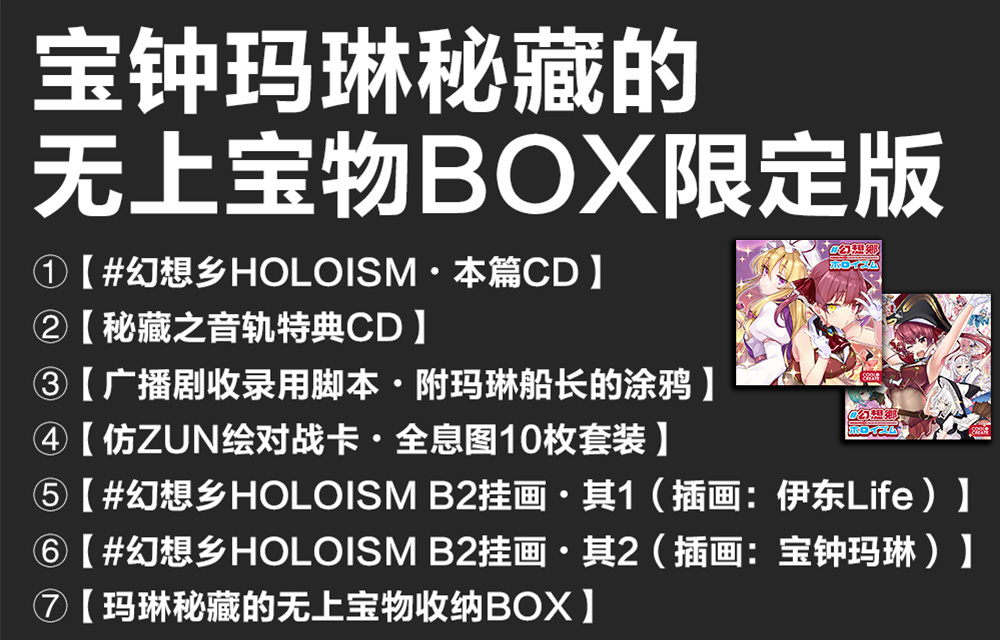

宝钟玛琳、朝向幻想乡出航～！
由宝钟玛琳与愉快的伙伴们奉上，
既有东方Vocal Arrange曲！还有广播剧部分！应有尽有！
将玛琳船长想做到的事情悉数实行的东方同人Vocal＆广播剧CD终于出航！
封套插画为可翻转双面设计！（插画：伊东Life・宝钟玛琳）
总计6首灵魂之作级Vocal Arrange曲！令人惊异的约40分钟广播剧部分！
仅仅这些就可谓是至宝了居然连「宝钟玛琳秘藏的无上宝物BOX限定版」也登场！
偶尔有这样的同人作品出现不也很棒嘛！
这就是，COOL&CREATE为您献上的前所未闻的东方同人音乐！！
※关于本作的采访报道现已刊登于VR系媒体PANORA上！
东方同人×Hololive梦幻搭档的实现？ 宝钟玛琳・Beat马里奥・七条Lettuce所讲述的同人CD「#幻想乡HOLOISM」的幕后
「#幻想乡HOLOISM」内容
 封套插画（双面可翻转）：
封套插画（双面可翻转）：- 作品名
- #幻想乡HOLOISM
- 内容
- 将玛琳船长想做到的事情悉数实行的东方同人音乐Vocal＆广播剧CD
- 社团名
- COOL&CREATE
官方简中版
- 展会首发
-
魅知幻想博览会2020上海场
2020年7月25-26日（周六～周日） - 展会价格
-
通常版：120元
宝物BOX限定版：499元
- 店铺发售
》》》淘宝囧仙子通贩《《《
2020年7月27日（周一）※预约进行中- 店铺价格
-
通常版：140元
宝物BOX限定版：499元
官方日文版
- 展会价格
-
通常版：2,000日元
- 店铺价格
-
下载版：2,000日元（+税）
通常版：2,800日元（+税）
宝物BOX限定版：10,000日元（+税）
- 下载版
-
2020年6月26日（周五）
- DL店铺
- DLsite特设页 →贩卖页
- 通常版・限定版
- 2020年7月10日（周五）※预约进行中
- 宝物BOX限定版
- Melonbooks TANO*C STORE animate AKIBA-HOBBY 虎之穴 akibaoo BookMate DIVERSE DIRECT
- 通常版
- Melonbooks TANO*C STORE animate AKIBA-HOBBY 虎之穴 akibaoo BookMate DIVERSE DIRECT
- 预定发布
-
iTunes Store
Google Play Music
于「东方同人音乐流通」发布
「宝钟玛琳秘藏的无上宝物BOX限定版」内容
-
①【#幻想乡HOLOISM・本篇CD】
封套插画为可翻转双面设计！
总计6首灵魂之作级Vocal Arrange曲！令人惊异的约40分钟广播剧部分！
仅仅这些就可谓是至宝了对吧！！
（规格：共12Track / 8P Booklet）
-
②【秘藏之音轨特典CD】
收录了大家最喜欢的Ham先生所作的广播剧剧中BGM的全部曲目！（含未使用曲）
更毫无保留地收录了Vocal曲的卡拉OK音轨！
（规格：共15Track）
-
③【广播剧收录用脚本・附玛琳船长的涂鸦】
广播剧收录时使用的脚本的复制版！附有贵重的船长涂鸦＆签名喔！（※复制版本）
享受寻找收录时更改的台词、即兴发挥处的乐趣吧！
（规格：B5尺寸 / 48P）
附带B5尺寸的台本翻译册
-
④【仿ZUN绘对战卡・全息图10枚套装】
基于五行×猜拳×阴阳的仿ZUN绘对战卡！
经专业人士・Yutarou先生之手全体参演成员得以ZUN绘化登场！而且采用全息Hologram工艺！（毕竟是Holo）
不过游戏规则并没有特别确定下来所以希望你们能好好地考虑啦～
（规格：63×88mm标准尺寸 / 圆角加工 / 表面全息反光）
-
⑤【#幻想乡HOLOISM B2挂画・其1（插画：伊东Life）】
由伊东Life全力绘制，参演成员齐聚热闹至极的插画！
以B2尺寸堂堂正正地挂在房间里吧！
（规格：515×728mm / 双层绒面革材质 / 热升华印刷）
PS：日文版挂轴为可折叠，中文版挂轴为整体
-
⑥【#幻想乡HOLOISM B2挂画・其2（插画：宝钟玛琳）】
玛琳船长本人绘制，越过境界的宝钟玛琳×八云紫贴贴插画！
以B2尺寸压倒性地挂在房间里吧！
（规格：515×728mm / 双层绒面革材质 / 热升华印花）
PS：日文版挂轴为可折叠，中文版挂轴为整体
-
⑦【玛琳秘藏的无上宝物收纳BOX】
将玛琳秘藏的无上至宝一个不落地装入的特制BOX！
这也好那也好、全都充满了梦想喔！
（规格：300×215×50mm）
本篇曲目列表
-
01.【第0话】老人会必听・早期东方改编曲限定歌回
宝钟玛琳（cv.宝钟玛琳）
-
02.HoyHoy☆幻想HOLOISM / 宝钟玛琳 with HoloismFantasy
演唱：宝钟玛琳
声：兔田佩克拉、润羽露西娅、不知火芙蕾雅、白银诺艾尔
作词・编曲：Beat马里奥与Maron 作曲：Maron (IOSYS)
原曲：众神眷恋的幻想乡 出处：东方风神录
-
03.船长・玛琳的屁股船锚 / 宝钟玛琳
演唱：宝钟玛琳
作词：夕野Yoshimi (IOSYS) 编曲：ARM (IOSYS)
原曲：Captain Murasa 出处：东方星莲船
翻唱源：Captain・村纱的屁股船锚 (IOSYS)
-
04.【第1话】#迷途的玛琳 能逃出这片竹林吗…！？
宝钟玛琳（cv.宝钟玛琳）
因幡帝（cv.兔田佩克拉）
铃仙·优昙华院·因幡（cv.樱巫女）
-
05.幸福兔子・PekoMikoMarine / 兔田佩克拉、樱巫女、宝钟玛琳
演唱：兔田佩克拉、樱巫女、宝钟玛琳
作词：Beat马里奥、Amane 编曲：myu314 MIX：Ham
原曲：宇佐大人的白旗、灰姑娘的笼子 ～ Kagome-Kagome
出处：东方花映冢、东方永夜抄
翻唱源：幸福的兔子 (COOL&CREATE)
-
06.【第2话】此处即为三魔女定期会议场地
宝钟玛琳（cv.宝钟玛琳）
铃仙·优昙华院·因幡（cv.樱巫女）
爱丽丝·玛格特洛依德（cv.紫咲诗音）
雾雨魔理沙（cv.白上吹雪）
帕秋莉·诺蕾姬（cv.润羽露西娅）
-
07.耳机罗曼史 / 宝钟玛琳
演唱：宝钟玛琳
作词：Beat马里奥、Maron（IOSYS） 编曲：ARM（IOSYS）
原曲：Native Faith、哈德曼的妖怪少女、请注意万年备用伞、天空的格林尼治
出处：东方风神录、东方地灵殿、东方星莲船、大空魔术
-
08.【第3话】幻想乡令人失望的名胜观光！！
宝钟玛琳（cv.宝钟玛琳）
琪露诺（cv.夏色祭）
帕秋莉·诺蕾姬（cv.润羽露西娅）
蕾米莉亚·斯卡蕾特（cv.湊阿库娅）
雾雨魔理沙（cv.白上吹雪）
-
09.【第4话】祝・来自幻想乡特设直播室的首次直播！
宝钟玛琳（cv.宝钟玛琳）
西行寺幽幽子（cv.白银诺艾尔）
八云紫（cv.不知火芙蕾雅）
八云蓝（cv.白上吹雪）
雾雨魔理沙（cv.白上吹雪）
-
10.Over the Border / 宝钟玛琳 feat.不知火芙蕾雅
演唱：宝钟玛琳 feat.不知火芙蕾雅
作词：七条Lettuce (IOSYS) 编曲：D.watt (IOSYS)
原曲：少女绮想曲 ～ Dream Battle、恋色Master Spark、Necro-Fantasia
出处：东方永夜抄、东方妖妖梦
-
11.【第5话】谢谢你，幻想乡
宝钟玛琳（cv.宝钟玛琳）
-
12.Help me, ERINNNNNN!! #幻想乡HOLOISMver. / 宝钟玛琳与愉快的伙伴们
演唱：宝钟玛琳
声：兔田佩克拉、樱巫女、紫咲诗音、白上吹雪、润羽露西娅、夏色祭、湊阿库娅、白银诺艾尔、不知火芙蕾雅
作词：Beat马里奥 编曲：Beat马里奥、TERRA（少女理论观测所） 演奏：TERRA（少女理论观测所）
原曲：竹取飞翔 ～ Lunatic Princess
出处：东方永夜抄
翻唱源：Help me, ERINNNNNN!! (COOL&CREATE)
Staff List
-
主演:
宝钟玛琳（宝钟玛琳）
-
友情出演:
兔田佩克拉（因幡帝）
樱巫女（铃仙·优昙华院·因幡）
紫咲诗音（爱丽丝·玛格特洛依德）
白上吹雪（雾雨魔理沙、八云蓝）
润羽露西娅（帕秋莉·诺蕾姬）
夏色祭（琪露诺）
湊阿库娅（蕾米莉亚·斯卡蕾特）
白银诺艾尔（西行寺幽幽子）
不知火芙蕾雅（八云紫）
-
主插画:
伊东Life
宝钟玛琳
-
ZUN绘风插画:
Yutarou
-
剧本:
七条Lettuce (IOSYS)
-
剧中BGM:
Ham (Foxtail-Grass Studio)
-
乐曲制作、协助:
Beat马里奥
Maron (IOSYS)
ARM (IOSYS)
D.watt (IOSYS)
TERRA (少女理论观测所)
Ham (Foxtail-Grass Studio)
-
设计:
coda
-
视频:
七薙
-
母带:
Shibayan (ShibayanRecords)
-
官方简中版·内容汉化:
宝钟玛琳字幕组
翻译:
夕云
马鹿
毛玉
恶魔
管家
宝鐘かえで
寶鐘団子
校对:
ピチューン
桔梗酱
美工/排版:
MAFUYU
-
官方简中版·协力:
白神
囧仙
月珩
-
特别感谢:
158亭
Amane